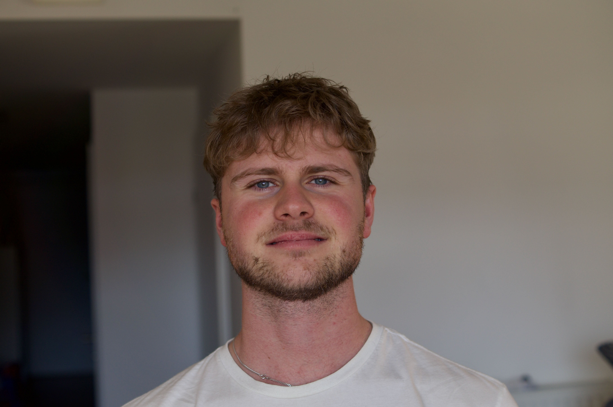

about me.

hello, i'm cedric, a computer science student based in munich, germany. currently, i'm working at driveblocks, enabling mapless autonomous driving. recently i completed an internship in autonomous driving at bmw. before that, i studied cs in innsbruck. in my bachelor thesis i analyzed representational alignment in encoder-only transformers.
i like reading (check out my goodreads), sports (hiking and cycling) as well as ml/dl.
you can checkout the following links if you want to learn more about me: